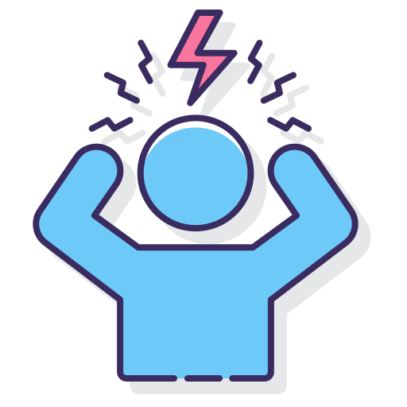
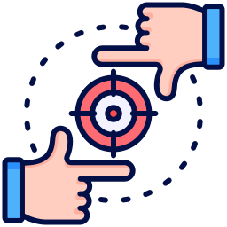
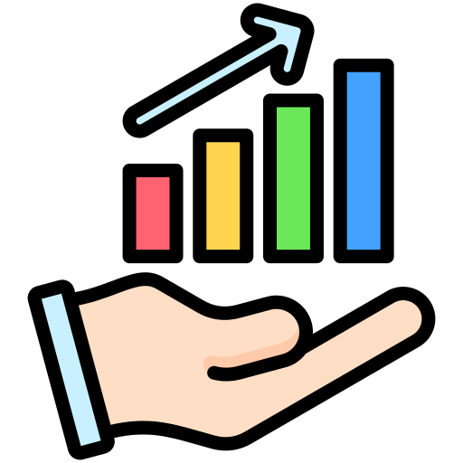

How Do To-Do Lists Work?

Increased Productivity
Helps keep tasks and priorities clearly outlined.

Improves Time Management
To-do lists help you manage your time effectively, allowing you to allocate your day to the most important tasks.

Reduces Stress
Organizing your tasks on a to-do list reduces stress by providing a clear overview of what needs to be done.

Enhances Focus
To-do lists help you focus on tasks at hand, minimizing distractions and boosting productivity.

Provides a Sense of Achievement
Checking off tasks from your to-do list gives you a sense of accomplishment and motivation.
Check off your tasks and feel the satisfaction!
Ready to Start? Try Our Interactive To-Do List
Get Started